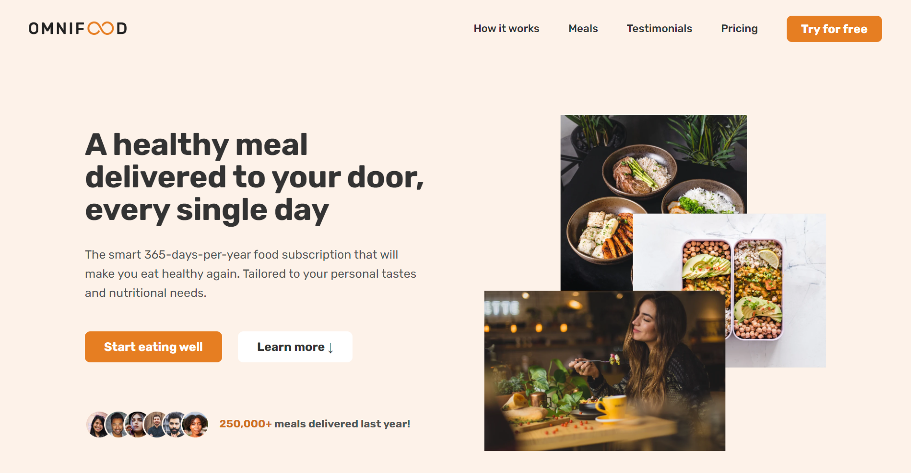
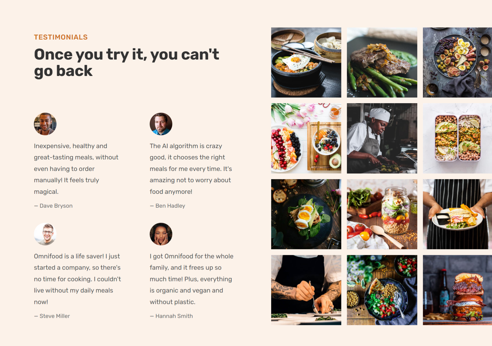
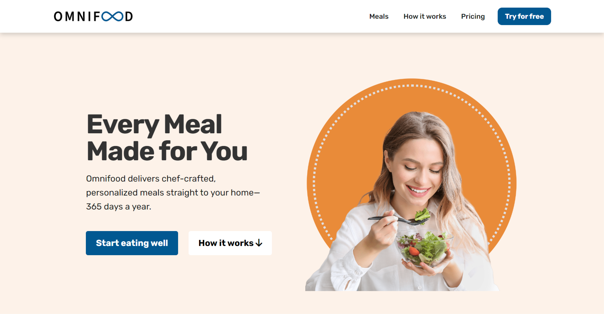
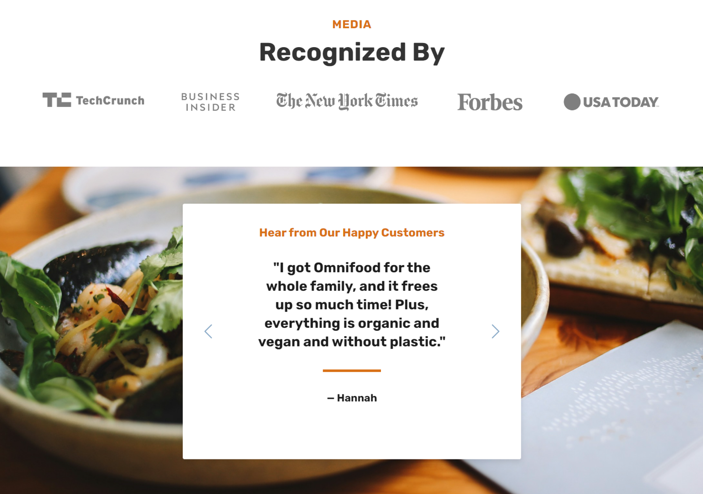

Omnifood
Omnifood is a made-up food delivery service that customizes meals according to your liking. It began as a Udemy class project and later evolved to adhere to web accessibility guidelines. My redesign goal was to create a website that is accessible to everyone while still maintaining its appearance and features.
Type:
Project redesign
Stack:
Sass
Bootstrap
Netlify
Adobe Express
Figma
Live:
Accessibility goals
When I started working on the Omnifood project, I faced a significant challenge: making the website design more inclusive. After using various accessibility tools, I discovered several issues, such as low contrast, small text sizes, and missing alternative text for images. I was determined to improve Omnifood's accessibility rating to comply with Web Content Accessibility Guidelines (WCAG) and make it easier for everyone to navigate the website. This was not just about meeting standards, but about creating an experience that everyone can understand and use.
Design and Development
As I worked on redesigning the Omnifood website, my primary goal was to maintain its original appeal while improving its accessibility. I used Bootstrap and Sass, two tools that I learned by watching tutorials on YouTube. By doing this, I was able to improve the site's aesthetics and functionality, with a focus on making it more user-friendly. I learned to customize the interface to make navigation simpler and easier for those who use assistive technologies. I also corrected the 16 color contrast errors that were present in the initial design. To make sure that the users' needs were prioritized, I designed the hero section in a way that clearly conveys the identity and offerings of Omnifood. This way, users can quickly find what they are looking for. The review section was redesigned as a user-controlled carousel, allowing visitors to read testimonials at their own pace.
Before:
 After:
 Reflecting
I had a great experience working on this project, which reinforced the importance of focusing on accessibility from the beginning of the design and development process. Using tools like Sass helped me streamline the styling process and save time. However, I learned that relying solely on automated accessibility checkers isn't enough. During the contrast assessments, I found some discrepancies that needed manual verification, and it turned out that we were not meeting the WCAG standards. This project was not only a technical challenge but also a journey towards creating a more inclusive digital world. Every step of the way, I improved my skills as a designer and developer and became more committed to making the web accessible to everyone.
Thanks for stopping by!
I appreciate you checking out my work!
Feel free to email me or connect through LinkedIn.